Chapter 7 Examining the MSE object
In the Chapter 6 we used the DLMtool to run a Management Strategy Evaluation for the blue shark stock.
The output of the MSE was saved to an object, of the class MSE, called BSharkMSE. You should be able to create the BSharkMSE object following the steps outlined in the previous chapters.
7.1 The MSE Object
The names of the slots in an object of class MSE can be displayed using the slotNames function:
slotNames(BSharkMSE)## [1] "Name" "nyears" "proyears" "nMPs" "MPs" "nsim"
## [7] "OM" "Obs" "B_BMSY" "F_FMSY" "B" "SSB"
## [13] "VB" "FM" "C" "TAC" "SSB_hist" "CB_hist"
## [19] "FM_hist" "Effort" "PAA" "CAA" "CAL" "CALbins"As you can see, MSE objects contain all of the information from the MSE, stored in 24 slots.
7.1.1 The First Six Slots
The first six slots contain information on the structure of the MSE. For example the first slot (Name), is a combination of the names of the Stock, Fleet, and Obs objects that were used in the MSE:
BSharkMSE@Name## [1] "Stock:Blue shark Fleet:Generic_fleet Obs model:Imprecise-Biased Imp model:Perfect_Imp"Other information in these first slots includes the number of historical years (nyears), the number of projection years (proyears), the number of name of the Management Procedures (nMPs and MPs), and the number of simulations (nsim).
7.1.2 The OM Slot
The OM slot in the MSE object is a data frame that the values of the parameters used in the Operating Model:
names(BSharkMSE@OM)## [1] "RefY" "M" "Depletion" "A"
## [5] "SSBMSY_SSB0" "FMSY_M" "Mgrad" "Msd"
## [9] "procsd" "Esd" "dFfinal" "MSY"
## [13] "qinc" "qcv" "FMSY" "Linf"
## [17] "K" "t0" "hs" "Linfgrad"
## [21] "Kgrad" "Linfsd" "recgrad" "Ksd"
## [25] "ageM" "L5" "LFS" "Vmaxlen"
## [29] "LFC" "OFLreal" "Spat_targ" "Frac_area_1"
## [33] "Prob_staying" "AC" "L50" "L95"
## [37] "B0" "N0" "SSB0" "BMSY_B0"
## [41] "TACSD" "TACFrac" "ESD" "EFrac"
## [45] "SizeLimSD" "SizeLimFrac" "Blow" "BMSY"
## [49] "SSBMSY" "Mexp" "Fdisc" "LR5"
## [53] "LFR" "Rmaxlen" "DR"If you use the dim function to report the dimensions of the OM data frame, you’ll notice that there are 55 columns, corresponding to the 55 parameters in the Operating Model, and 300 rows, each corresponding to a single simulation of the MSE.
7.1.3 The Obs Slot
The Obs slot contains another data frame, this one with 28 columns corresponding to the values drawn from the Observation model:
names(BSharkMSE@Obs)## [1] "Csd" "Cbias" "CAA_nsamp" "CAA_ESS" "CAL_nsamp"
## [6] "CAL_ESS" "CALcv" "betas" "Isd" "Derr"
## [11] "Dbias" "Mbias" "FMSY_Mbias" "lenMbias" "LFCbias"
## [16] "LFSbias" "Aerr" "Abias" "Kbias" "t0bias"
## [21] "Linfbias" "Irefbias" "Crefbias" "Brefbias" "Recsd"
## [26] "LenCVbias" "hbias" "BMSY_B0bias"The Obs data frame also has 300 rows, each corresponding to a single simulation.
The information contained in the OM and Obs slots can be used to examine the sensitivity of the performance of Management Procedures with respect to different operating model and observation parameters. This is discussed in more detail below.
7.1.4 The B_BMSY and F_FMSY Slots
The B_BMSY and F_FMSY are data frames containing the biomass relative to biomass at maximum sustainable yield \(\left(\frac{B}{B_{MSY}}\right)\), and fishing mortality relative to the rate corresponding to maximum sustainable yield \(\left(\frac{F}{F_{MSY}}\right)\) for each simulation, Management Procedure and projection year.
If we look at the class of the B_BMSY slot, we see that it is an array:
class(BSharkMSE@B_BMSY)## [1] "array"Using the dim function we can see that it is a 3-dimensional array, with the size corresponding to the number of simulations (nsim), the number of Management Procedures (nMPs), and the number of projection years (proyears):
dim(BSharkMSE@B_BMSY)## [1] 300 5 50This information can be used to calculate statistics relating to the performance of each Management Procedure with respect to these metrics.
For example, if you wish to look at the distribution of \(\frac{B}{B_{MSY}}\) for the second Management Procedure (DCAC), you could use the boxplot function:
boxplot(BSharkMSE@B_BMSY[,2,], xlab="Year", ylab="B/BMSY")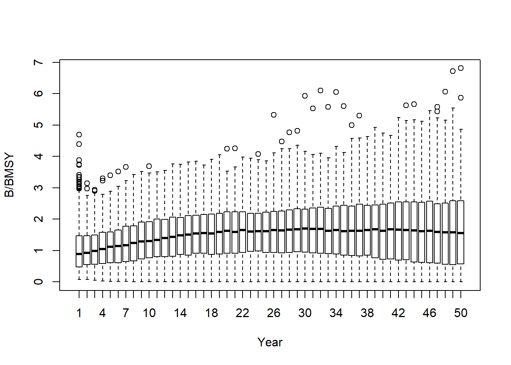
This plot shows that the relative biomass for the stock generally increases through the projection period when the DCAC method is used, with the median relative biomass increasing from about 0.89 in the first year to 1.55 in the final year.
However, the distribution appears to have quite high variability, which suggests that although the method works well on average, the final biomass was very low in some simulations.
We will look at more aspects of plotting the MSE results in the sections below.
7.1.5 The B, FM, and C Slots
The B, FM, and C slots contain the information relating to the stock biomass, the fishing mortality rate, and the catch for each simulation, Management Procedure, and projection year.
Typically, the MSE model in the DLMtool does not include information on the absolute scale of the stock biomass or recruitment, and all results usually must be interpreted in a relativistic context.
This is particularly true for the biomass (B) and catch (C) where the absolute values in the MSE results (other than 0!) have little meaning.
The biomass can by made relative to \(B_{MSY}\), as shown above. Alternatively, biomass can be calculated with respect to the unfished biomass \(\left(B_0\right)\), from information stored in the OM slot.
The catch information is usually made relative to the highest long-term yield (mean over last five years of projection) for each simulation obtained from a fixed F strategy. This information (RefY) can be found in the OM slot.
Alternatively, the catch can be made relative to the catch in last historical year (CB_hist; see below), to see how future catches are expected to change relative to the current conditions.
Examples of this are shown in sections below.
7.1.6 The TAC Slot
Currently, the information in this slot is identical to that in the Catch (C) slot. This may change when an implementation error model is included in the DLMtool.
7.1.7 The SSB_hist, CB_hist, and FM_hist Slots
The SSB_hist, CB_hist, and FM_hist slots contain information on the spawning stock biomass, the catch biomass, and the fishing mortality from the historical period (the nyears in the operating model).
These data frames differ from the previously discussed slots as they are 4-dimensional arrays, with dimensions corresponding to the simulation, the age classes, the historical year, and the spatial areas.
The apply function can be used to aggregate these data over the age-classes or spatial areas.
7.1.8 The Effort Slot
The Effort slot is a 3-dimensional array containing information on the relative fishing effort (relative to last historical year, or current conditions) for each simulation, Management Procedure and projection year.
We can look at the distribution of fishing effort for each Management Procedure in the final year of the projection period:
pyear <- BSharkMSE@proyears
boxplot(BSharkMSE@Effort[,, pyear], outline=FALSE, names=BSharkMSE@MPs, ylab="Relative fishing effort")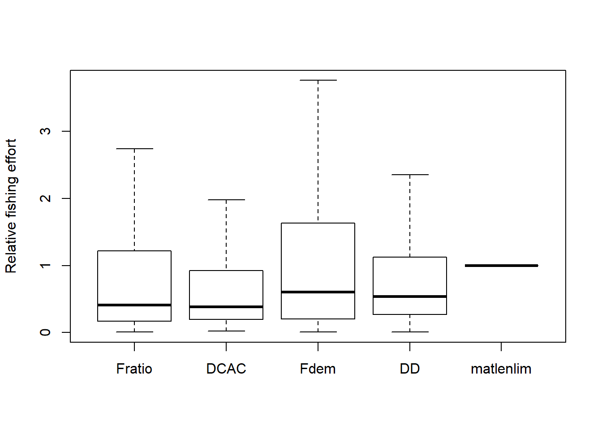
This plot shows that the median fishing effort in the final year ranges from 0.39 to 0.6 for the first four output control methods, and is constant for the input control method (matlenlim).
This is because the output control method adjusts the total allowable catch, which depending on the amount of available stock, also impacts the amount of fishing activity.
The input control methods assume that fishing effort is held at constant levels in the future, although the catchability is able to randomly or systematically vary between years. Furthermore, input control methods can also adjust the amount of fishing effort in each year.
7.2 Performance Metrics
A key use of the DLMtool is to evaluate the trade-offs in the performance of different potential Management Procedures and to assist in the decision-making process as to which Management Procedure is most likely to satisfy the various management objectives under realistic range of uncertainty and variability in the system.
7.2.1 The Need for Performance Metrics
In order to evaluate the relative effectiveness of different Management Procedures, it is important that decision-makers have clearly-defined management objectives. These management objectives can be incorporated into the MSE process in the form of performance metrics, which provide the yardstick with which to compare the relative performance of different management strategies.
Fisheries managers are confronted with the difficult task of maximizing yield and ensuring the sustainability of the resource and the overall health of the marine environment. The principal objectives of fisheries management could be described as ensuring sustainable harvests and viable fishing communities, while maintaining healthy ecosystems. However, this simplistic view overlooks the fact that there are often conflicts in different management objectives and that there is rarely an optimal management approach that fully satisfies all management objectives (Punt, 2015). Walters and Martell (2004) explain that the task of modern fisheries management is to identify the various trade-offs among conflicting objectives and decide how to balance them in a satisfactory way.
7.2.2 Inevitable Trade-Offs
A typical trade-off is the abundance of the target species versus the catch. Assuming no significant system-wide natural perturbations, a fish stock may be exploited sustainability if catches are set at low levels. However, such economic under-utilization of the resource is often seen as undesirable. Alternatively, high catches may produce immediate short-term benefits, but may result in long-term degradation, or perhaps collapse, of the stock.
Additionally, there is often a trade-off between stock size and fishing effort, which results in lower catch rates (and lower profit) for individual fishers when a large number of fishers are active in the fishery (Walters and Martell, 2004). Other common trade-offs include the age and size at first capture, either delaying harvest until individuals are fewer in number (due to natural mortality) but larger in size, or capturing a large number of small sized fish (Punt, 2015).
When multiple objectives are considered, there is usually not a single optimum solution, and fisheries managers are faced with the difficult task of determining the most appropriate management action that satisfies the numerous management objectives and stakeholder interests (Punt, 2015).
7.2.3 Operational Management Objectives
A key strength of the MSE approach is that decision-makers are required to specify clear objectives, which can be classified as either “conceptual” or “operational” (Punt et al., 2014). Conceptual objectives are typically high-level policy goals that may be broadly defined.
However, in order to be included in an MSE, conceptual objectives must be translated into operational objectives (i.e., expressed as values for performance metrics). Such operational objectives, or performance metrics, may consist of both a reference point (e.g., biomass some fraction of equilibrium unfished level) as well as a measure of the acceptable associated risk (e.g., less than 10% chance that biomass declines below this reference level).
It is not unusual that some of the management objectives are in conflict. A key benefit of the MSE approach is to highlight these trade-offs among the different management objectives to guide the decision-making process. However, in order for these trade-offs to be quantified, it is critically important that the performance metrics are quantifiable and thus able to be incorporated into the MSE framework (Punt, 2015).
7.2.4 Performance Metrics in the DLMtool
Management strategy evaluation is a simulation exercise where the model can track the specific performance with perfect information, so it is possible to state performance objectives in specific terms that are consistent with the typical objectives of fisheries policies, such as:
- Biomass relative to unfished biomass \(\left(B_0\right)\) or biomass at maximum sustainable yield \(\left(B_{MSY}\right)\).
- Fishing mortality rate relative to fishing at maximum sustainable yield \(\left(F_{MSY}\right)\).
- Yield (short-term or long-term) of a particular management strategy relative to the yield if the fishery were being exploited at \(F_{MSY}\).
- Inter-annual variability in yield or effort (e.g., fluctuations in yield from year to year).
Because the management strategy evaluation runs many simulations of the fisheries performance under each management strategy being tested, the performance can be stated probabilistically, such as the specific probability of biomass being above or below a specific biomass threshold or target.
7.2.4.1 Fishing Mortality
For example, the management strategies can be ranked by the likelihood of overfishing to occur, where the probability of overfishing is measured by the proportion of simulation runs where the fishing mortality rate (F) under a specific management strategy is higher than the F that is expected to produce the maximum sustainable yield.
Management strategies that have a lower probability of overfishing occurring are typically preferable to those that frequently cause excessive fishing mortality rates. If there are 1,000 simulation runs for each management strategy over a 50-year projection period, then the probability of overfishing could be based on the proportion where F is greater than (or less than) \(F_{MSY}\) over all years or any subset of years (e.g., probability of overfishing in years 41-50 of the 50-year projection period).
7.2.4.2 Stock Biomass
Another performance metric included in DLMtool is the probability that the stock biomass is above or below some biological reference point. For example, a minimum performance limit may be half the biomass at maximum sustainable yield (0.5 BMSY), and the performance of the management strategies can be ranked by the probability of the stock remaining above this level.
Management strategies that fail to maintain biomass above this limit with a high priority may be considered too risky and therefore excluded from further examination.
7.2.5 Developing Additional Performance Metrics
There may be other performance metrics that are of interest to fishery managers and stakeholders. Stakeholder participation is critical when developing performance metrics to evaluate different biological scenarios or management strategies in a MSE. Furthermore, it is important that the performance metrics, together with any acceptable risk thresholds are identified and agreed upon before the MSE is conducted.
The DLMtool can be customized to track and display additional performance metrics as identified by stakeholders.
7.2.6 Summarizing Management Procedure Performance
The information in the MSE object can be summarized in a number of ways.
The summary function provides information on the performance of the Management Procedures with respect to various metrics, including the probability of overfishing, and the probability that the biomass is below various reference levels:
summary(BSharkMSE)## MP Yield stdev POF stdev P10 stdev P50 stdev P100 stdev
## 1 Fratio 56.57 45.86 37.19 41.64 15.01 30.64 31.23 40.40 46.76 42.63
## 2 DCAC 57.97 47.11 24.11 38.59 13.49 30.56 19.43 35.43 31.83 38.50
## 3 Fdem 58.65 43.86 42.12 42.84 17.93 33.06 35.20 41.83 50.70 42.95
## 4 DD 72.75 39.17 39.53 30.24 13.07 23.86 31.29 31.56 56.39 33.24
## 5 matlenlim 88.11 50.93 49.79 38.28 0.36 3.04 9.47 21.95 28.03 35.13
## LTY STY VY
## 1 49.8 54.0 43.7
## 2 58.7 62.1 91.0
## 3 55.7 58.8 38.3
## 4 74.7 72.0 73.3
## 5 72.5 48.5 0.0This information can be used to identify poorly performing methods, and exclude them from further, perhaps more comprehensive, runs of the MSE.
7.3 Plotting the MSE Results
The DLMtool has 22 plotting functions which can be used to examine the performance of the Management Procedures.
7.3.1 Trade-off Plots
One of the most common use of a MSE is to examine the trade-offs in the performance of alternative management procedures.
The DLMtool has a number of functions to examine these trade-offs, and users of the Toolkit can easily develop their own.
The Tplot function creates four plots that show the trade-off between the expected relative yield and the probability of overfishing and the probability of the biomass being below three different reference points:
Tplot(BSharkMSE)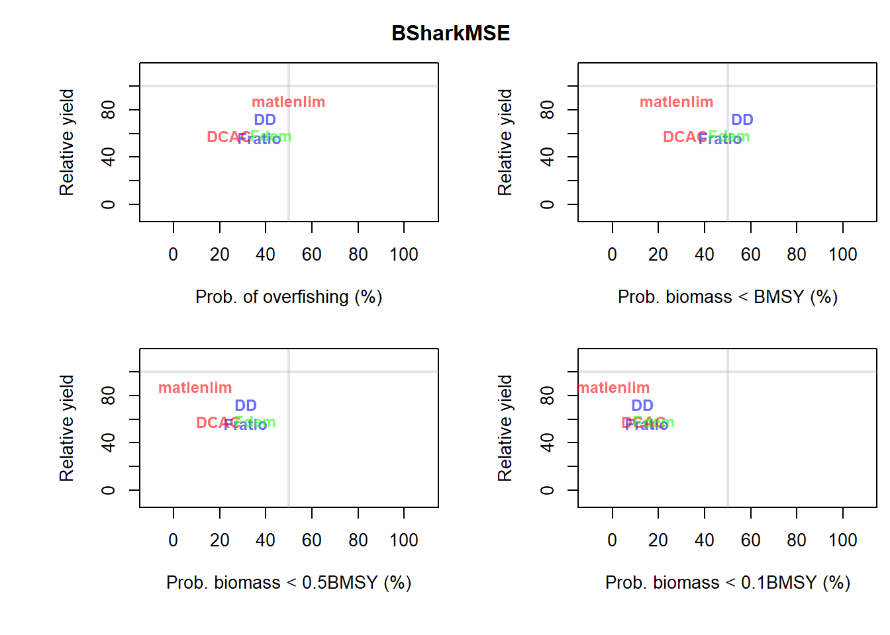
In this case, the plot shows that the matlenlim method results in the highest long-term yield, and also one of the lower probabilities that the biomass will fall below \(0.5B_{MSY}\).
The Tplot2 function shows the trade-off between long-term and short-term yield, and the trade-off between biomass being above \(0.1B_{MSY}\) and the expected variability in the yield:
Tplot2(BSharkMSE)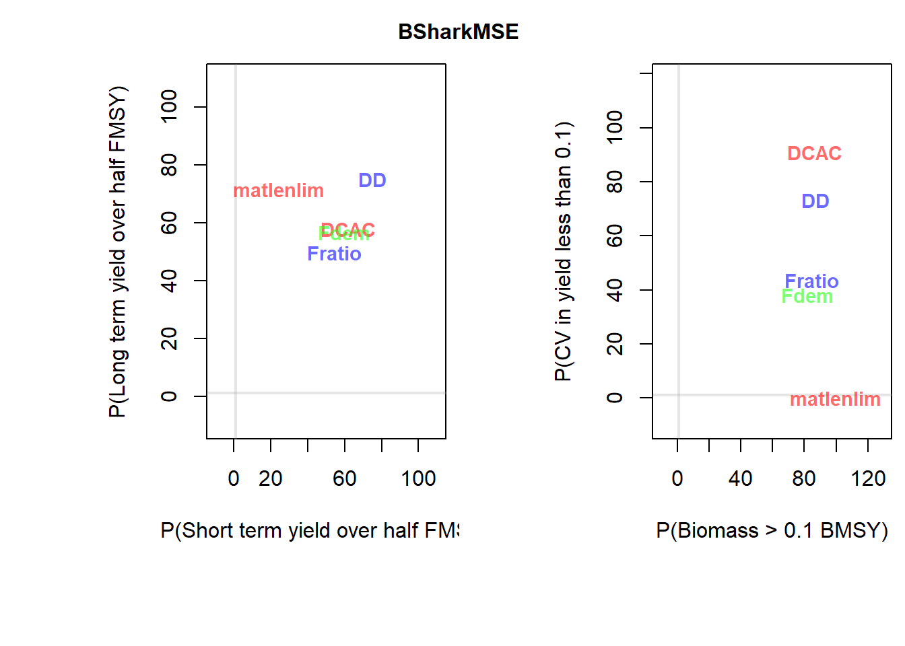
The NOAA_plot function was developed from applications of the DLMtool to fisheries in the Caribbean. This plot shows the trade-offs between the probability of not overfishing and long-term yield, and the probability of not being in an overfished state versus the probability of the annual variation in yield being less than 15%:
NOAA_plot(BSharkMSE)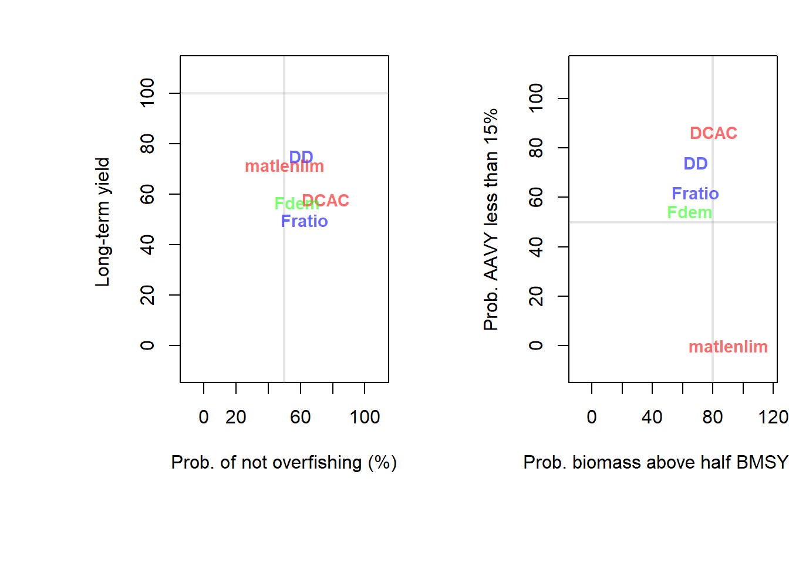
## PNOF B50 LTY VY
## Fratio 62.8 68.8 49.7 62.0
## DCAC 75.9 80.6 58.0 86.3
## Fdem 57.9 64.8 56.7 54.3
## DD 60.5 68.7 75.0 74.0
## matlenlim 50.2 90.5 71.6 0.07.3.2 Boxplot
The distribution of various statistics can be examined for the Management Procedures using the boxplot function:
boxplot(BSharkMSE)## Calculating MP Performance for last 10 years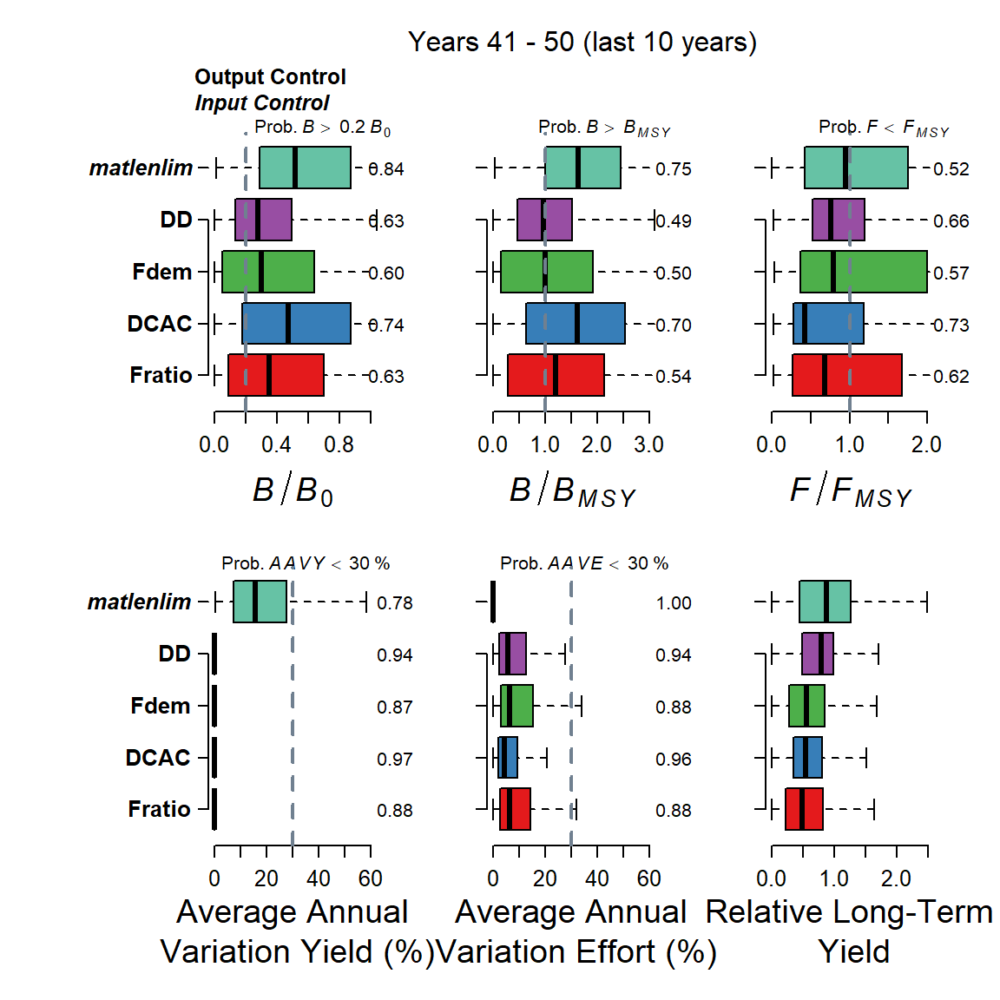
boxplot is a generic function, which means that its behavior depends on the class of object that is supplied to it. In this case, R recognizes that we pass an object of class MSE to the boxplot function, and calls the appropriate plotting function boxplot.MSE.
The boxplot.MSE function has a number of arguments which allow users to control various aspects of the plot. You can display the arguments by using the args function (args(boxplot.MSE)) or looking at the help documentation (?boxplot.MSE).
7.3.3 Barplot
The barplot function is another generic function, which calls barplot.MSE when it is supplied with an object of class MSE.
The barplot function shows the probability of each Management Procedure meeting the specified performance criteria:
out <- barplot(BSharkMSE)## Calculating MP Performance for last 10 years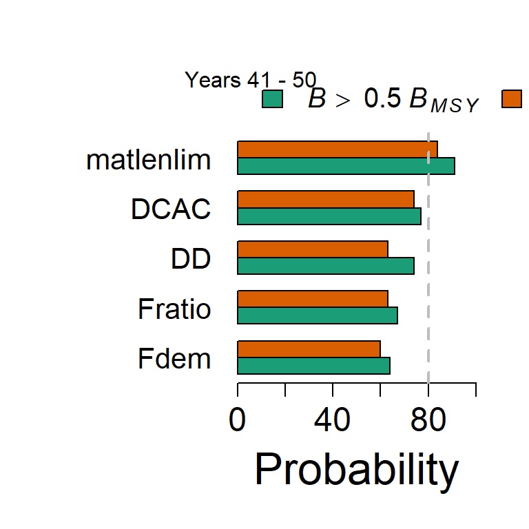
Many aspects of the plot can be controlled using the arguments to the barplot.MSE function, including the number of years over which to calculate the probabilities, as well control the performance metrics that shown in the plot.
The barplot function returns invisible output, which we have captured here by assigning the output of the function to the variable out. We can display this output by typing out into the R console:
out ## MP B_BMSYp SSB_SSB0p Pass MPClass
## 1 Fdem 64 60 FALSE Output
## 2 Fratio 67 63 FALSE Output
## 3 DD 74 63 FALSE Output
## 4 DCAC 77 74 FALSE Output
## 5 matlenlim 91 84 TRUE InputThis data frame displays the probability with respect to the different performance metrics, as well as whether the Management Procedure passed or failed the specified level of acceptable risk.
In this can, we can see that the matlenlim method is the only method that meets the requirement of at least 80% probability that the biomass in the last 10 years of the projection period is above \(0.5B_{MSY}\) and above \(0.2B_0\).
7.3.4 Joint Probability Plot
The previous plots calculate the probability of that Management Procedure will meet individual performance criteria.
An alternative is to calculate the probability that a Management Procedure will simultaneously meet all of the performance criteria. The Jplot function has been designed to calculate and display the joint probability of meeting multiple criteria.
For example, the plot below calculates the probability that the biomass in the last 10 years of the projection period is above \(0.5B_{MSY}\) and \(0.2B_0\) for each of the 5 Management Procedures included in the MSE:
Jplot(BSharkMSE)## Calculating MP Performance for last 10 years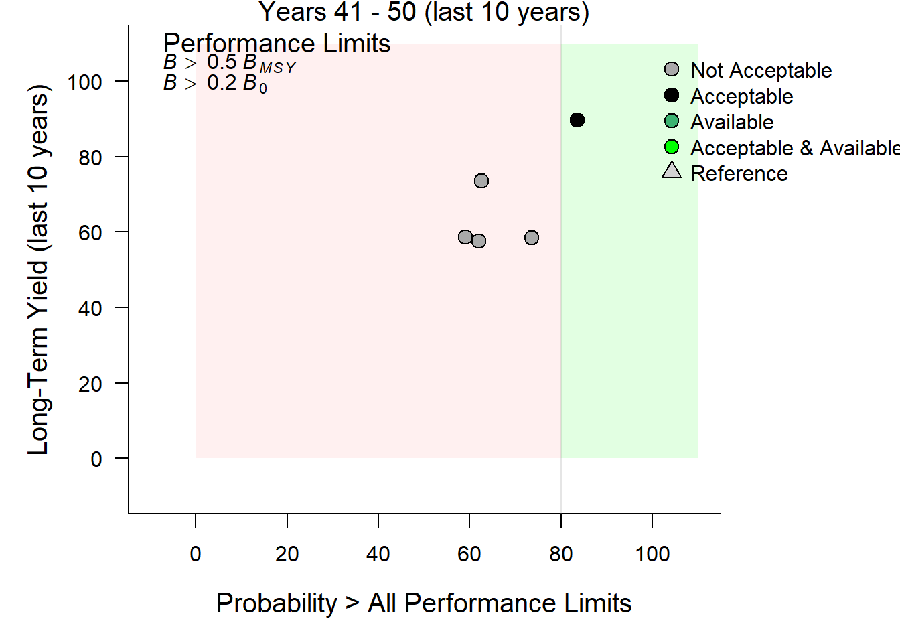
The risk threshold and the performance criteria can be adjusted in the arguments to the Jplot function.
7.3.5 Wormplot
The wormplot function plots the likelihood of meeting biomass targets in future years:
wormplot(BSharkMSE)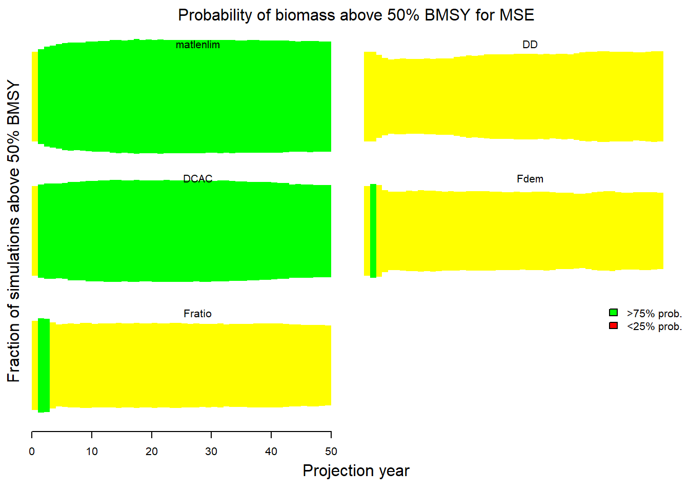
The arguments to the wormplot function allow you to choose the reference level for the biomass relative to \(B_{MSY}\), as well as the upper and lower bounds of the colored bands.
7.3.6 Projection Plots
The Pplot function plots the trajectories of biomass, fishing mortality, and relative yield for the Management Procedures.
By default, the Pplot function shows the individual trajectories of \(B/B_{MSY}\) and \(F/F_{MSY}\) for each simulation:
Pplot(BSharkMSE)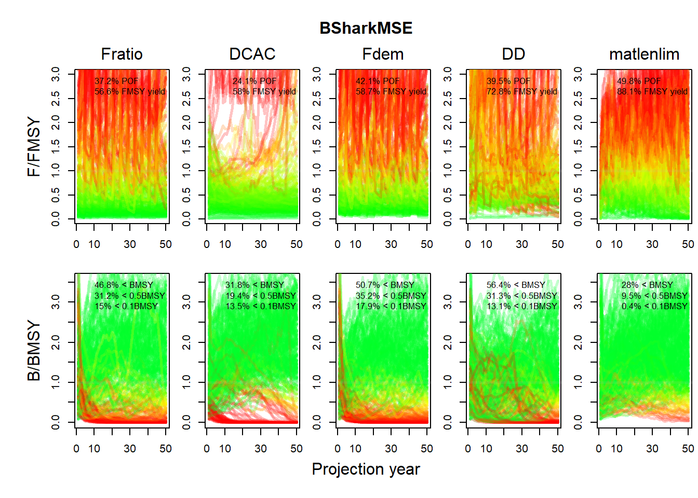
The Pplot2 function has several additional arguments. The YVar argument can be used to specify additional variables of interest. For example, here we have included the projections of yield relative to the long-term optimum yield:
Pplot2(BSharkMSE, YVar=c("B_BMSY", "F_FMSY", "Yield"))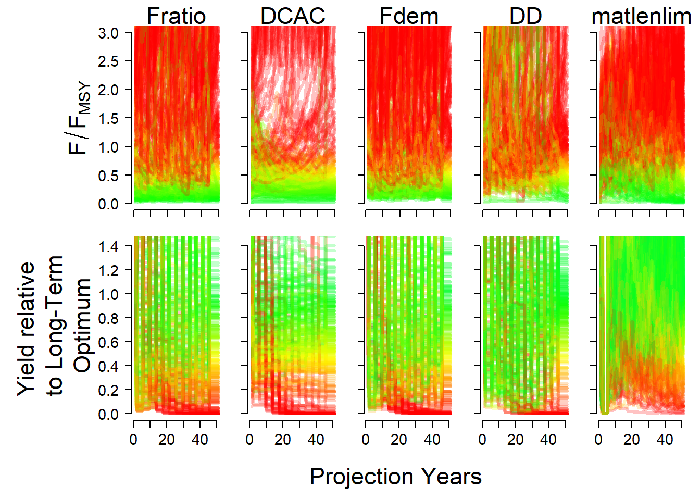
The traj argument can be used to summarize the projections into quantiles. Here we show the 20th and 80th percentiles of the distributions (the median (50th percentile) is included by default):
Pplot2(BSharkMSE, traj="quant", quants=c(0.2, 0.8))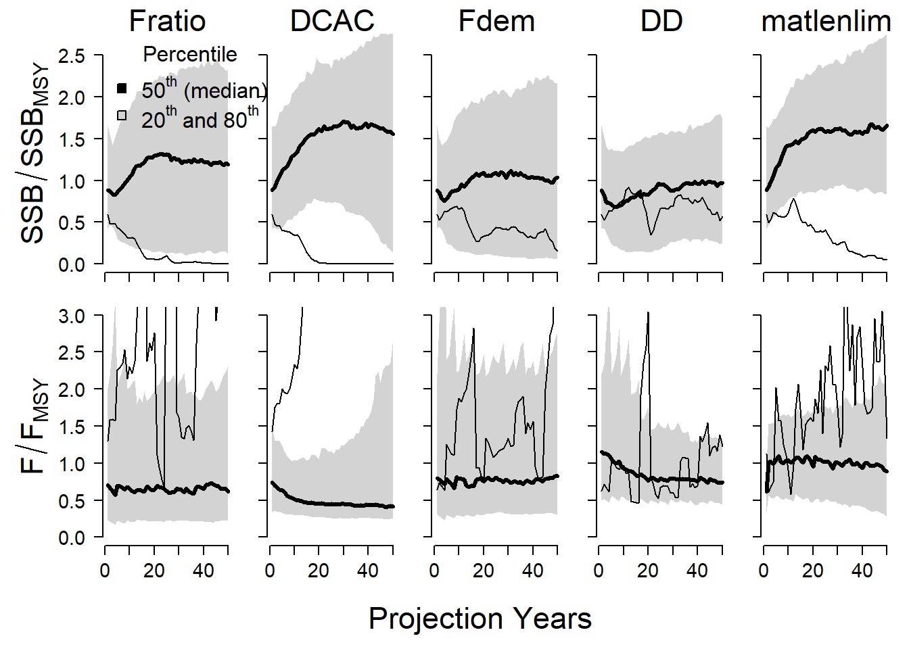
Details on additional controls for the Pplot and Pplot2 functions can be found in the help documentation associated with this function.
7.3.7 Kobe Plots
Kobe plots are often used in stock assessment and MSE to examine the proportion of time the stock spends in different states. A Kobe plot of the MSE results can be produced with the Kplot function:
Kplot(BSharkMSE)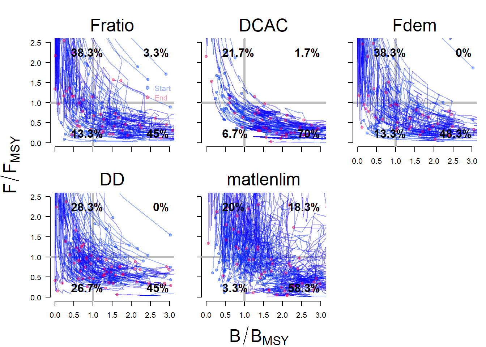
Because of the way it uses transparent colors to show the overlapping lines, the Kplot function can take a long time to render, especially on machines with a Windows OS.
7.3.8 Scatter Plots
The Splot function can be used to create a simulation-by-simulation scatter plot of the relative fishing mortality and stock biomass for each Management Procedure:
Splot(BSharkMSE)## Calculating MP Performance for last 10 years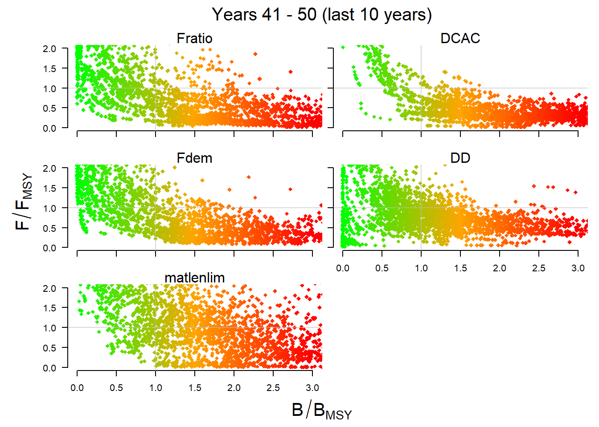
7.3.9 Compare to Current Conditions
The Cplot shows a scatter plot of the median biomass and median yield over the last five years of the projection relative to the current conditions (the last year in the historical period):
Cplot(BSharkMSE, ShowLabs=TRUE)## Calculating MP Performance for last 5 years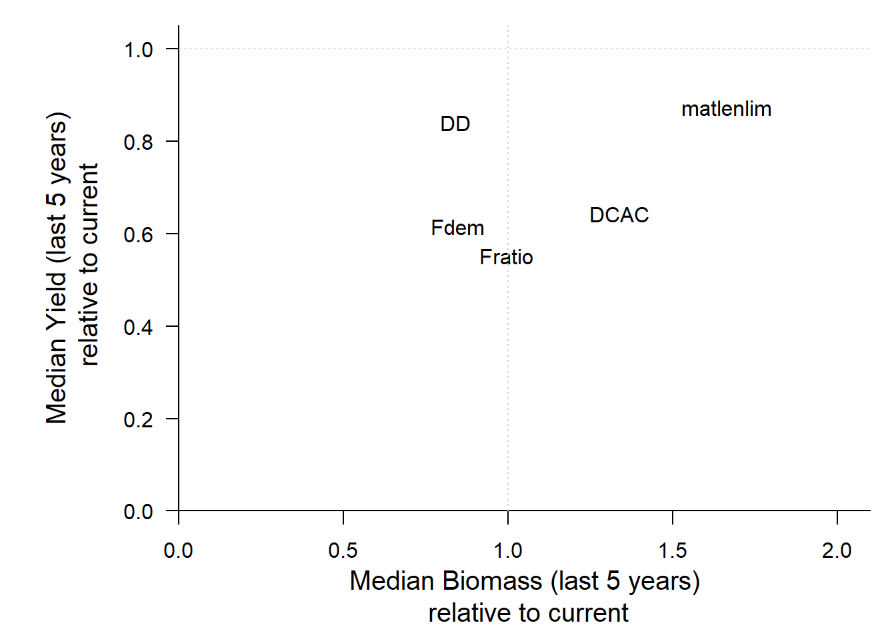
In this example, the results show that catches in the future are likely to be lower than the current levels of catch regardless of which Management Procedure is used.
However, the future median biomass for the DD and Fdem methods is also lower than the current levels, which suggests that, in this case, these two methods result in both lower catches and lower biomass and are probably not the most suitable for managing this fishery.
7.3.10 List the MSE Plotting Functions
You can see a list of all the plotting functions in the DLMtool for MSE objects using the plotFun function:
plotFun()## DLMtool functions for plotting objects of class MSE are:## barplot boxplot COSEWIC_plot Cplot DFO_plot
## DFO_plot2 IOTC_plot Jplot Kplot NOAA_plot
## plotFleet plotOFL Pplot Pplot2 Splot
## Tplot Tplot2 TradePlot VOI VOI2
## VOIplot wormplot7.4 Subsetting the MSE Object
The plotting functions demonstrated above calculate the probabilities and show the trade-offs for all the simulations in the MSE. However, sometimes it is interesting to examine the results of individual Management Procedures or simulations.
Many of the plotting functions have the optional arguments MPs and sims which allow you to specify which particular Management Procedures or simulations to include in the plots.
You can also manually subset the MSE object using the Sub function.
7.4.1 Subsetting by Performance
For example, we may wish to exclude any Management Procedures that have less than 30% probability that the biomass is below \(0.5B_{MSY}\), and focus our analysis on the remaining Management Procedures.
We can do this using a combination of the summary function and the Sub function:
stats <- summary(BSharkMSE) # save summary object to `stats`
accept <- which(stats$P50 < 30) # index of methods that pass the criteria
MPs <- stats[accept,"MP"] # the acceptable MPs
subMSE <- Sub(BSharkMSE, MPs=MPs)Here we can see that the DCAC, matlenlim methods (2 of the 5) met our specified criteria. We used the Sub function to create a new MSE object that only includes these Management Procedures.
We can than proceed to continue our analysis on the subMSE object, e.g.:
Tplot(subMSE)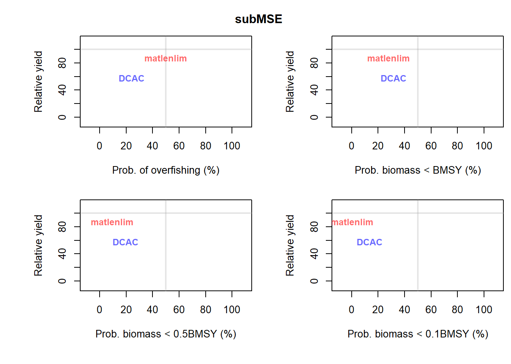
7.4.2 Subsetting by Operating Model Parameters
We can also subset the MSE object by simulation. For example, we may be interested to look at how the methods perform under different assumptions about the natural mortality rate (M).
In this MSE M ranged from 0.15 to 0.25. Here we identify the simulations where M was below and above the median rate:
below <- BSharkMSE@OM$M < median(BSharkMSE@OM$M)
above <- BSharkMSE@OM$M > median(BSharkMSE@OM$M)We can then use the Sub function to create two MSE objects, one only including simulations with lower values of M, and the other with simulations where M was above the median value:
belowMSE <- Sub(BSharkMSE, sims=below)
aboveMSE <- Sub(BSharkMSE, sims=above)You can see that the original MSE object has been split into two objects, each with half of the simulations:
belowMSE@nsim## [1] 150aboveMSE@nsim## [1] 150We could then continue our analysis on each subset MSE and determine if the natural mortality rate is critical in determining which Management Procedure we would choose as the best option for managing the fishery.
7.5 Value of Information
In the last section we looked at how the MSE object can subset by simulations which allows us to explore the sensitivity to various operating model parameters. However, this method only allows us the examine the sensitivity to a single parameter at a time. The Value of Information (VOI) functions have been designed to explore the sensitivity of the performance of the Management Procedures in more detail.
7.5.1 Observation Parameters
The VOIplot function shows how the relative long-term yield changes with respect to the Observation parameters:
VOIplot(BSharkMSE, nMP=5)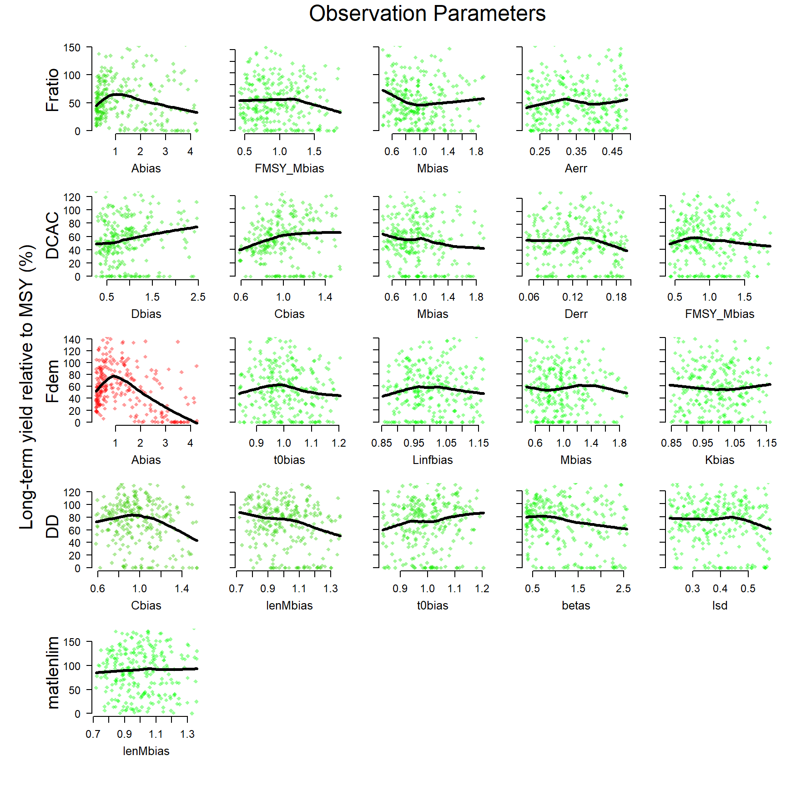
By default, the VOIplot function only shows the four Management Procedures with the greatest sensitivity. Here we’ve made it show all five methods using the nMP argument.
In this example, we can see that the Fratio method is particularly sensitive to bias in the current estimate of abundance, and over-estimates of the current abundance result in very low long-term yield (probably do to collapse of the stock). The DCAC method appears most sensitive to bias in the estimated catch.
7.5.2 Operating Model Parameters
We can also look at the sensitivity with respect to the Operating Model parameters:
VOIplot(BSharkMSE, Par="OM", nMP=5)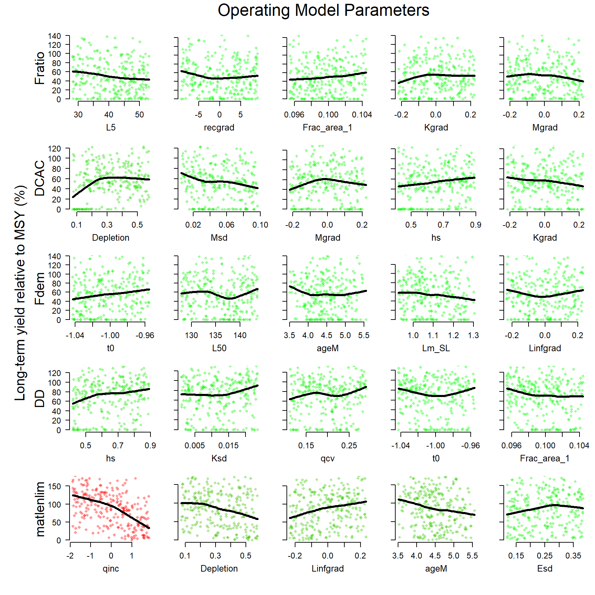
Here we can see that the Fratio method is most sensitive to \(F_{MSY}/M\), with yield generally increasing for higher values of the ratio.
We can also use the VOIplot function to look at the sensitivity with respect to the final biomass by specifying the YVar argument:
VOIplot(BSharkMSE, Par="OM", nMP=5, YVar="B")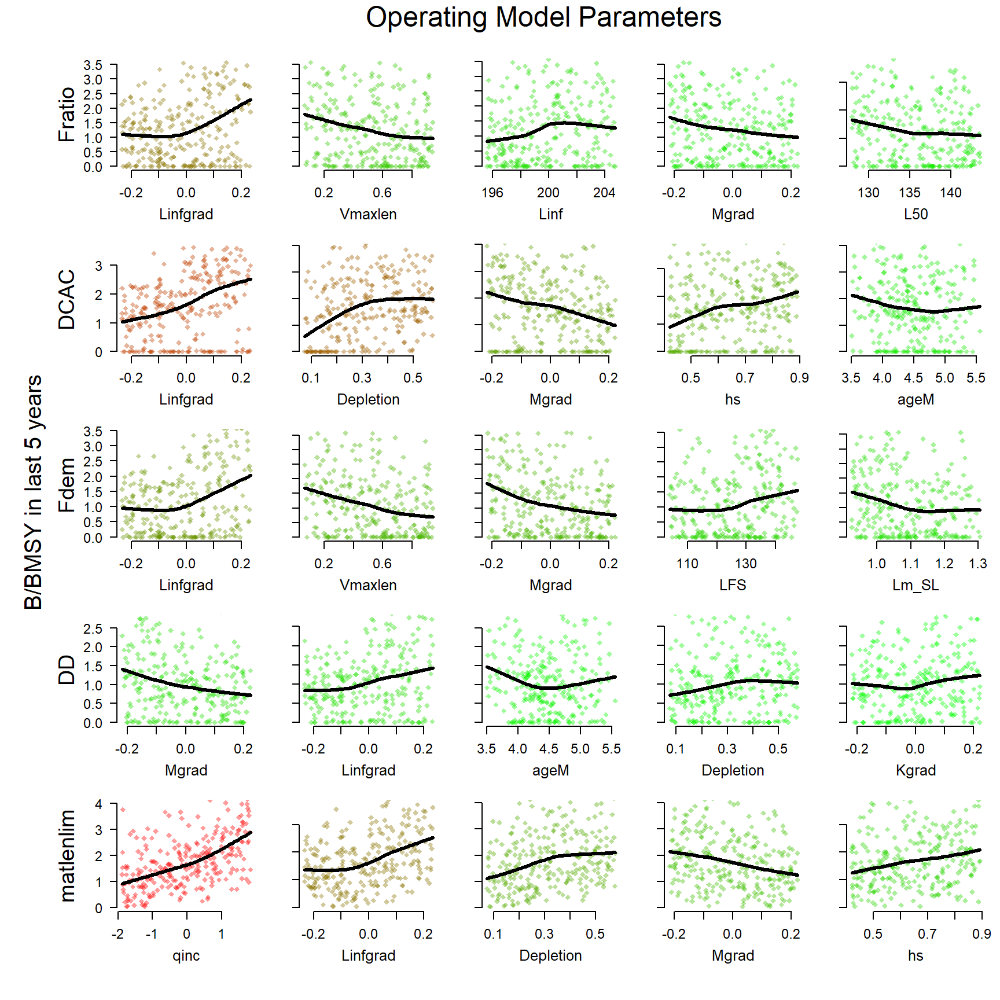
This result shows, perhaps unsurprisingly, that the final biomass is often strongly sensitive to the initial depletion, particularly for the DCAC and matlenlim methods.
The DLMtool also includes other value of information functions (VOI and VOI2) which present this information in alternative ways.